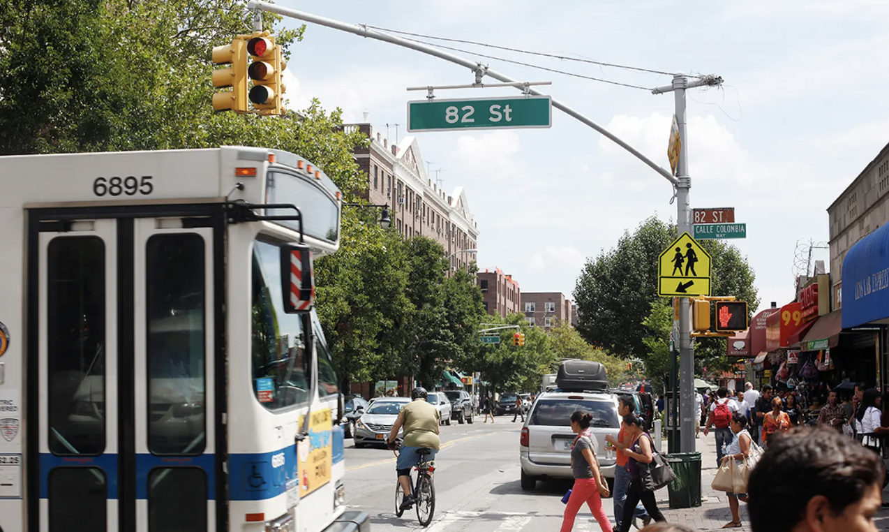
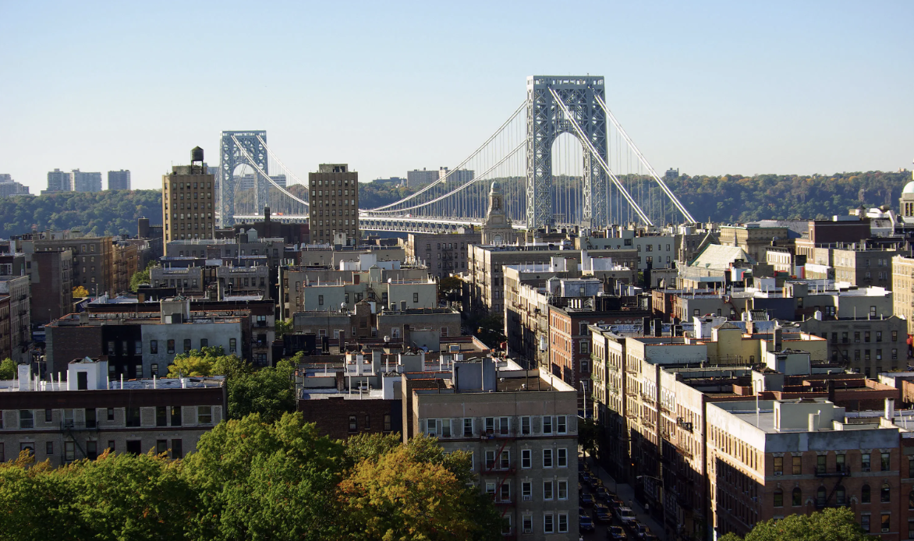

New York City stands as one of the world's most vibrant and diverse destinations, offering a plethora of experiences that cater to every taste and preference. This incredible diversity ensures that tourists are immersed in an endless array of possibilities, each promising unique adventures waiting to be discovered
Jackson Heights, a hidden neighborhood in the borough of Queens, is a gem often overshadowed by the more popular destinations in Manhattan. This vibrant and culturally diverse neighborhood holds the distinction of being one of New York City's best kept secrets, offering an abundance of authentic experiences that often elude the casual tourist's radar.
Adored by locals for its immense diversity, Jackson Heights is a true reflection of New York City's multicultural identity. The neighborhood is a melting pot of cultures, with a rich tapestry of residents hailing from countries all around the world.
Washington Heights, situated at the northern tip of Manhattan, is a lively neighborhood that frequently goes unnoticed by many tourists. Nevertheless, it possesses a wealth of cultural richness and historical significance that is worth one to truly acknowledge and explore
Manhattan is filled with history and museums that consistently bring enthusiasts into these locations. Nonetheless, these history enthusiasts will find Washington Heights particularly captivating due to its ties to the Revolutionary War. Fort Washington Park provides a captivating window into this historical connection, boasting well-preserved remnants of the original fort, picturesque walking trails, and breathtaking vistas that include panoramic views of the George Washington Bridge.